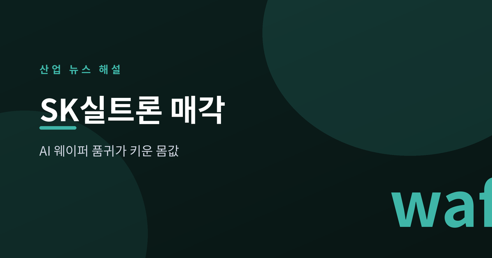
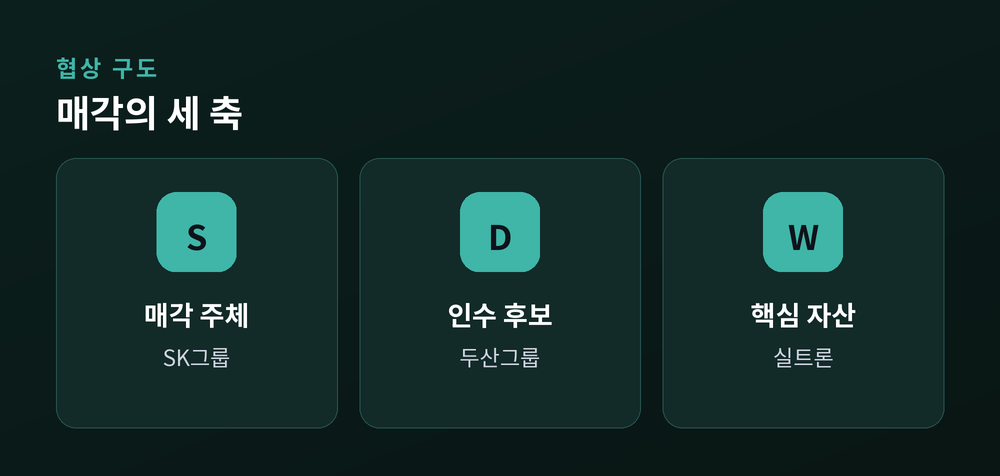
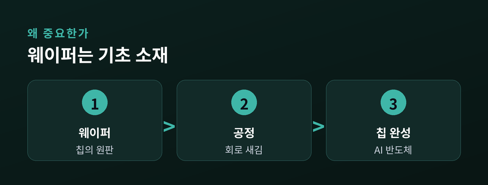
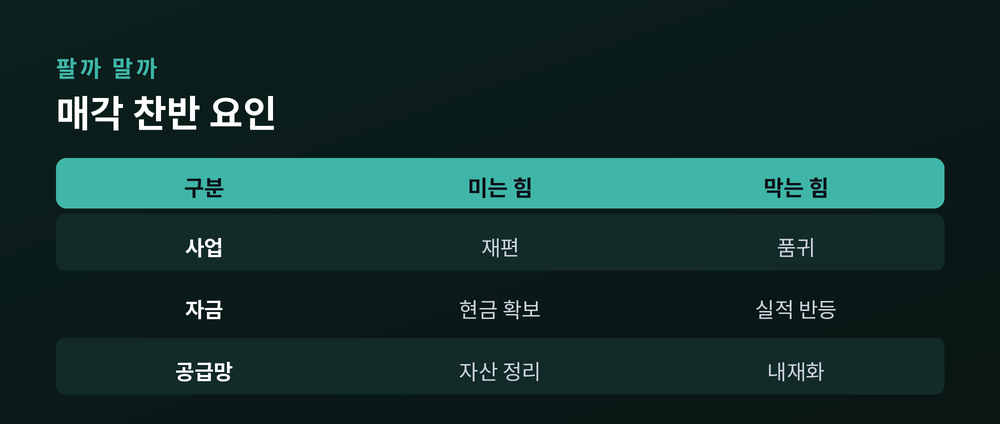

AI가 부른 실리콘 웨이퍼 품귀가 키운 몸값

SK그룹이 반도체용 실리콘 웨이퍼 제조사 SK실트론 매각 협상을 이달 안에 마무리할 방침이라는 보도가 나왔습니다.
인수 후보로는 두산그룹이 거론됩니다. 보도에 따르면 SK는 지난해 말 두산을 우선협상대상자로 통보했습니다.
거래 대상은 SK가 보유한 지분 약 70.6%이며, 나머지는 최태원 회장 몫으로 전해집니다.
거론되는 SK실트론의 기업가치는 4조~5조원대입니다. 다만 아직 확정된 수치는 아닙니다.
협상은 예상보다 길어지고 있습니다. SK 내부에서 매각 자체를 다시 들여다본다는 이야기도 나옵니다.

실리콘 웨이퍼는 모든 반도체가 그 위에 새겨지는 원판입니다.
땅이 없으면 집을 못 짓듯, 웨이퍼가 없으면 칩도 못 만듭니다.
문제는 AI 반도체 수요 폭발입니다.
올해 1분기 전 세계 웨이퍼 출하량은 지난해 같은 기간보다 13.1% 늘었습니다.
특히 첨단 공정에 쓰는 12인치(300mm) 웨이퍼 수요가 커지며 공급 부족 우려가 나옵니다.
SK실트론은 12인치 웨이퍼 세계 3위(점유율 약 17.8%로 거론)입니다.
품귀가 심해질수록 이 회사의 전략적 가치는 올라갑니다.

역설적이게도, 몸값이 오른 것이 매각을 어렵게 만들고 있습니다.
| 매각을 미는 힘 | 매각을 막는 힘 |
|---|---|
| 그룹 사업 재편(리밸런싱) | AI 웨이퍼 품귀 |
| 현금 확보 필요 | 계열사 실적 반등 |
| 비핵심 자산 정리 | 공급망 내재화 가치 |
SK하이닉스 등 그룹 안에서는 웨이퍼를 직접 쥐고 있어야 한다는 목소리가 있는 것으로 전해집니다.
"5조에 팔기엔 너무 싸다"는 평가도 시장에서 나옵니다.

관건은 이달 안 결론입니다. 딜이 성사되면 두산은 반도체 소재라는 새 성장축을 얻습니다.
반대로 SK가 보유를 택하면 웨이퍼 공급망을 그룹 안에 남기는 셈입니다.
웨이퍼 품귀는 당분간 이어질 전망입니다. 어느 쪽 결정이든 산업 파장은 큽니다.
수치와 후보, 시점은 협상 상황에 따라 바뀔 수 있으니 최종 발표를 지켜볼 필요가 있습니다.